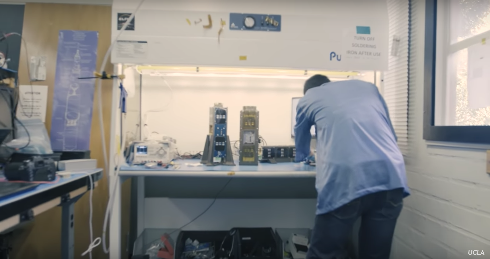

Software Engineering Internship @ Electron Losses and Fields Investigation (ELFIN) CubeSat Satellite
December 20, 2017
Table of Contents
Introduction
The Electron Losses and Fields Investigation (ELFIN) twin satellite mission consists of two CubeSat satellites with the mission to study the key mechanisms responsible for the loss of relativistic electrons from the Van Allen radiation belts. ELFIN is the first satellite mission designed, built, tested, and operated at UCLA and its inception dates back to 2009, and is jointly funded by the NSF and NASA. ELFIN was successfully launched on September 15, 2019 from Vandenberg Air Force Base as a secondary payload about the ULA Delta II launch vehicle.
I worked on ELFIN from February 2017 - October 2017 as a software engineer for the Command & Data Handling (CNDH) Subsystem, and later Lead Software Engineer. This was an incredible opportunity for me as it was my very first internship, and I got to work on real-life flight mission software and develop key algorithms for ELFIN that helped contribute to its successful launch.
What I worked on
For the first six months of my time with ELFIN, I worked as a Software Engineer for the Command & Data Handling (CNDH) Subsystem, which is responsible for the development and testing of software onboard the avionics stack. This includes all onboard processing and interfaces with the exception of the science payload. I got to work hands-on with the actual satellite, in which I wrote software for several PIC microcontrollers (e.g. the main Flight Computer, Attitute Control Board, etc.). I helped contribute to the onboard file system that stores and transmits the telemetry data collected; programmed commands into ELFIN's main flight computer that execute operations when ops sends such commands from our home station on Earth to ELFIN; and the main spin control law algorithms that help ELFIN determine its attitude and maintain it while in orbit.
As ELFIN is largely run and developed by UCLA undergraduates, my mentors and former Lead Software Engineers graduated, and for the last three months of my time with ELFIN, I took over as Lead Software Engineer. In my new position, I was responsible for the entire flight mission software; leading subsystem meetings (both internally with the other software engineers, as well as with other subystems in a multidisciplinary environment); as well as training new software engineers who will be joining the CNDH subsystem.
The highlight of my time with ELFIN was my collaboration with the Attitude Determination and Control (ADCS) subsystem, and ultimate Spin Test that the CNDH and ADCS team conducted at the Aerospace Corporation. The ADCS subsystem is responsible for designing, testing, and implementing the mechanisms which precisely acquire and control ELFIN's attitute (i.e. orientation and spin vectors) while in orbit. ELFIN is able to manage its attitude by utilizing onboard sensors and ground processing of telemetry data to acquire knowledge of its attitude at all times. In addition, actuation of two torquer coils aboard ELFIN help it to adjust its spin rate in order to stay on its proper orbital path, or correct it should it stray off course. I contributed by writing the software for the two main spin control law algorithms.
Any satellite going into orbit needs to pass a wide range of tests in order to ensure that it best equipped to succeed when launching as well as maintaining its orbit while in space. One such test is the spin test, which is important to ensure that ELFIN (which is a spin-stabilized satellite) can start up its spin after launch; maintain its spin vectors; and make any necessary adjustments. The spin test was conducted at the Aerospace Corporation in LA and consisted of placing ELFIN on an air bearing platform and sending the spin commands to ELFIN to see if it could properly spin up/down. It was an amazing experience as we got to visit a leader in the space industry and test our satellite using algorithms primarily written by myself.
Lab
All development (e.g. fabrication, software, simulations) on the ELFIN satellite were conducted in a lab on the UCLA campus. This was really cool to me as upon entering the lab we had to wear frictionless lab coats, as well as frictionless wristbands to ensure we didn't carry any static, which might short circuits on the ELFIN satellite. The lab featured soldering machines; many computers where we wrote the software; etc.

Final Thoughts
Overall, this was an incredible experience for me as I got to work on UCLA's first satellite mission as well as write key software that contributed to ELFIN's successful launch and successful attitude determination and control while it is currently in orbit. I am incredibly grateful to the ELFIN team for giving me the opportunity to work on such an amazing mission; provided me with my first internship that helped me get my foot in the door into the tech industry that helped jumpstart my career; and allowed me to gain an immense amount of knowledge and newly acquired skills that benefited in my future internships and full-time job.
If interested in checkout out more ELFIN articles or seeing more ELFIN pictures click here